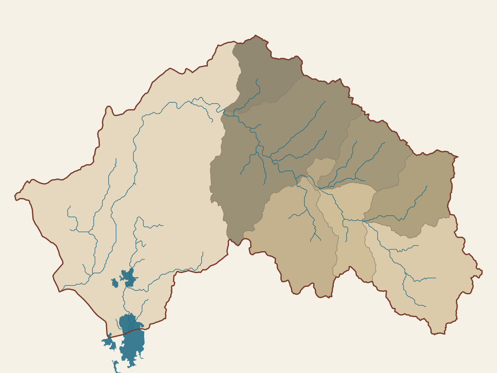
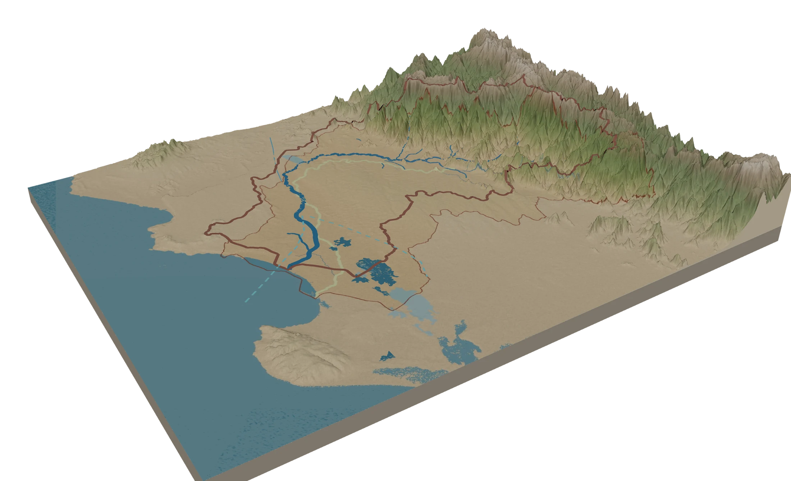
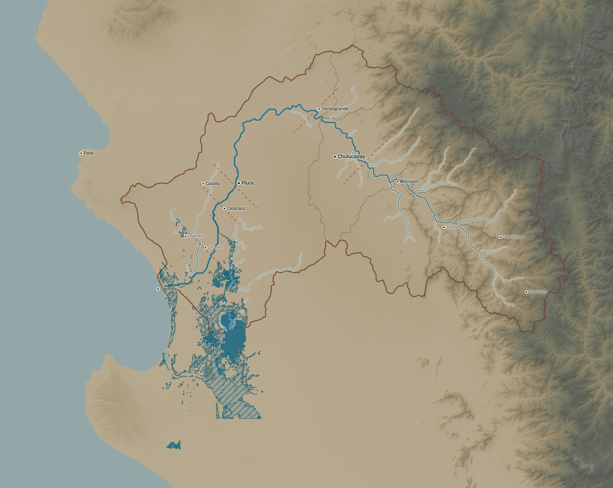
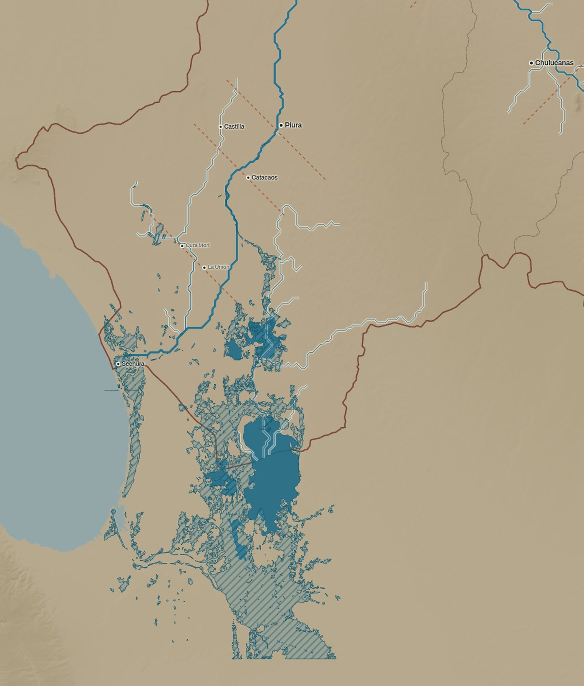

01
Ocho subcuencas y un resto derivado

La capa oficial de ANA trae ocho subcuencas. «Bajo Piura» es el resto de la cuenca, calculado antes de simplificar: no es una delimitación oficial nueva.
Ver la partición en el mapa →Atlas documentado · Piura, Perú

La cuenca del río Piura drena 10 938 km² entre los Andes y el desierto de Sechura. En un año normal, el agua muere en la laguna Ramón; en episodios extraordinarios, como 1983, el río llegó al mar.
Un atlas para leer el territorio, las inundaciones documentadas y la fuente de cada dato. No es un sistema de alerta ni un pronóstico.
Índice del atlas
Del mapa al documento: explora el territorio, mira el relieve, lee lo que pasó y comprueba de dónde sale cada dato.

Relieve, subcuencas, red hídrica, lagunas, inundación de 2017, obras de referencia y cortes transversales. Cada capa con su ficha.
El desierto, los Andes y el mar en una sola pieza. Exageración vertical declarada y lectura de altitud, no de vegetación.

1891, 1983, 1998, 2017 y 2023. Escenarios documentados, no pronósticos: lo que se sabe y lo que todavía falta.
30 fuentes con institución, escala, fecha, licencia, método y estado. 19 disponibles; las pendientes se declaran y no se dibujan.
Qué es este atlas
Reúne la cuenca, su relieve, su red hídrica y los eventos documentados con una regla simple: lo que no tiene fuente, no se dibuja. Cada capa, cifra y rótulo apunta a una ficha consultable.
Está pensado para docentes, periodistas, gestores y cualquier persona que necesite entender el río Piura sin ser especialista.
«Lo que es interpretación se marca como tal. Si un dato no existe públicamente, se dice.»
Tres lecturas del territorio
Tres ideas que explican por qué el Piura no llega al mar en un año normal. Ninguna reemplaza la ficha de la capa.

La capa oficial de ANA trae ocho subcuencas. «Bajo Piura» es el resto de la cuenca, calculado antes de simplificar: no es una delimitación oficial nueva.
Ver la partición en el mapa →La pendiente se desploma en la llanura: el agua se extiende y se estanca; el cauce muere en Ramón antes de llegar al océano.
Ver la base del cálculo →Esquema conceptual; no es geometría ni una obra a escala.
El caudal permanente del valle no es natural: llega por el trasvase desde la cuenca del Chira, regulado en Poechos. El canal Daniel Escobar solo se dibuja como referencia.
Ver la ficha de la obra →Método y trazabilidad
El registro maestro reúne institución, escala, fecha, licencia, método y grado de certeza. Las fuentes que faltan se declaran: no se rellenan con una geometría inventada.